HeatSink Sizer
Plate-fin heat sinks in seconds, with thermal margin and pressure drop, checked against published correlations.
0–5% vs. literature · 4.5% vs. 3D FE
Open-source Physics AI · Apache-2.0
PINNeAPPle is the open platform for PINNs, neural operators and digital twins in engineering. You write the equation, train the model, and check every answer against a solver, an experiment or an industry baseline — with the measured error on screen.
Platform
Every layer is an independent Python package on PyPI — use only the part you need. No layer hides the one below it: you see the mesh, the residual, the architecture and the error.
Products
Not concepts: each has code, executed cases and numbers measured in this repository. Together they cover the whole cycle — capture the physics, accelerate the answer, prove it is right, and follow the asset over time.
Product 01 · CFD
The complete CFD workflow, E1 to E11: you describe the problem, the pipeline builds geometry and mesh, runs OpenFOAM, generates the dataset, trains the surrogate and closes with the VeriPhysics evidence map. Built for pipe erosion, aerodynamics and heat transfer.
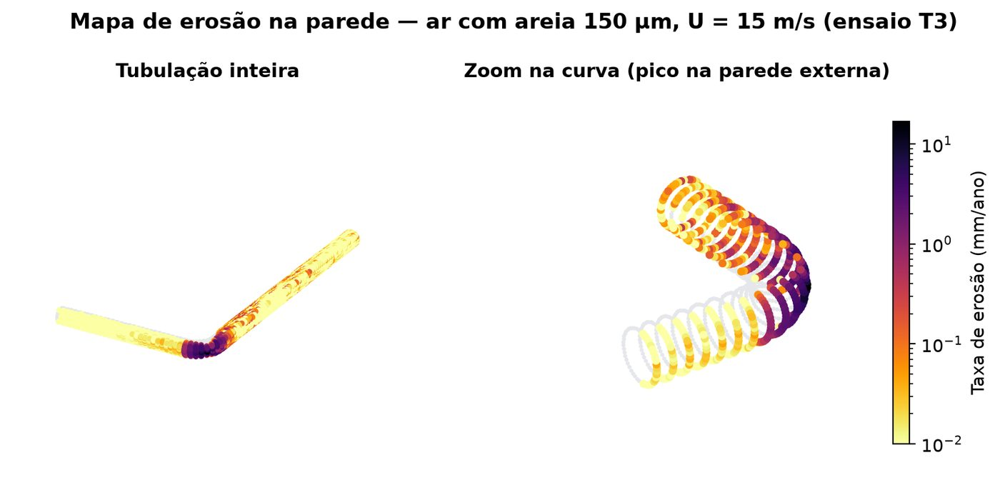
Product 02 · Surrogates
Turns the simulations your team already ran into a model that answers in microseconds — and is checked against the solver on every delivery, never against itself. This is the product that replaces “wait for the solver” with “adjust the design now”.
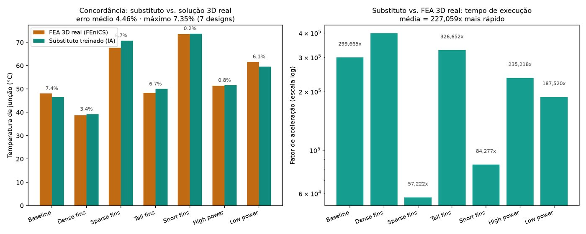
Product 03 · Verification
The quality gate that sits between the result and the decision. It takes a trained model, a CFD case or an FEA deck and returns one score per check — physics residual, convergence, calibration, coverage — with the real number and source behind each. A check that did not run shows as “not run”, never as a fabricated score.
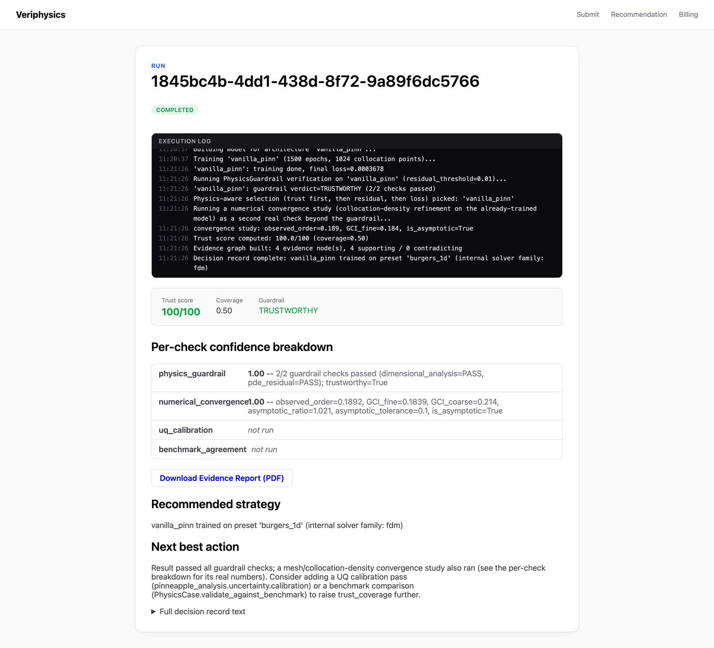
Product 04 · Digital twin
The digital-twin line, in two layers. Twin Runtime puts a validated model to work next to operational data. The commissioning layer closes the cycle on top of it: a signed contract, a preflight that can refuse, a backtest against an instrument the filter never sees, and filed evidence — which is what turns a runtime into a closed product.
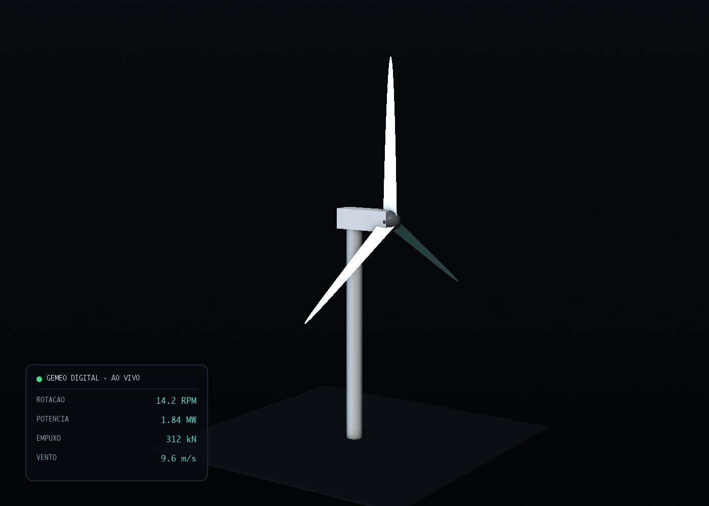
Measured results
Every row below has a reference external to training: a published experiment, a finite-volume or finite-element solver, or a literature comparison. Where there is a limit, it is stated.
| Case | Metric | Reference | Status |
|---|---|---|---|
| Thermal surrogate7 heat-sink geometries | ~200,000× · 4.46% | 3D FEniCS/dolfinx + gmsh; worst case 7.35% | validated |
| Erosion in a 90° bendOpenFOAM + surrogate | 1.05–1.49× · 1.0% | Vieira et al. 2016, open experiment; factor-2 criterion | validated |
| Airfoil optimizationsurrogate-guided, re-verified | −18.2% | Profile drag; target lift held to 0.04% | validated |
| Vehicle aerodynamics10 simpleFoam runs | 0.05% · 1.3% | Velocity field and coefficients vs. OpenFOAM; Cd at 0.17% | validated |
| PINN vs. finite volumesfield-by-field comparison | 0.39% | Independent finite-volume solver; max 0.67 °C | validated |
| Lid-driven cavitymesh refinement | 0.19% | Ghia et al.; starting from 1.26% | validated |
| Inverse h with a PINN2D plate and 3D block | 14.8 ± 0.3 | True value 15; hot spot 79.2 °C vs. 79.1 °C | validated |
| PCB thermodynamicseight package families | within 8% | Published θJA, from SOIC-8 to a 35 mm BGA | validated |
| Rover mobilitypublished model, corrected | 0.7–3.8% | Bekker–Wong; traction error 45× lower than the original | validated |
| Brake-disc Monte Carlomanufacturing tolerance | 1.9 °C | Nominal 495.9 °C; 95th percentile at 498.1 °C, limit 500 °C | validated |
| Physics confidenceclient model, confidential | residual >100× | VeriPhysics guardrail over an already-trained model | validated |
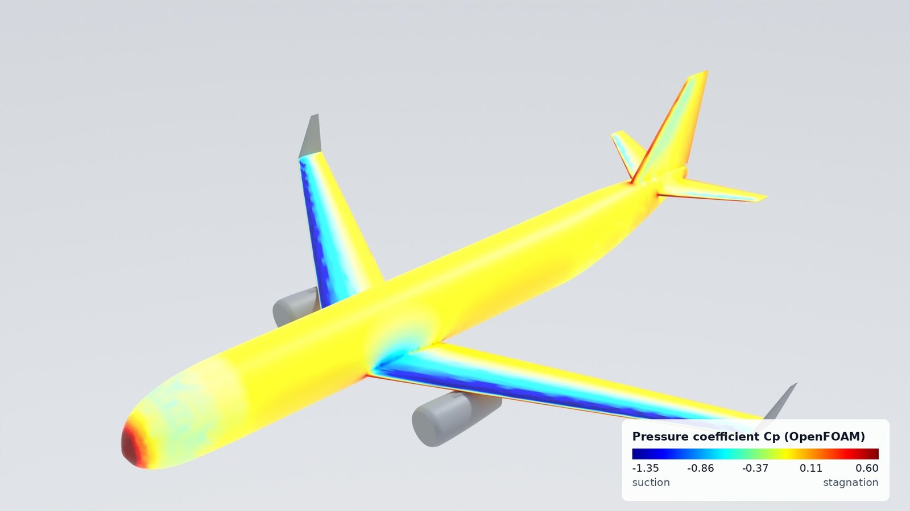
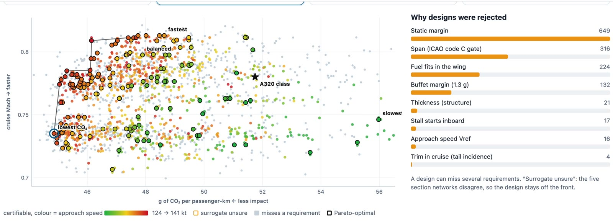
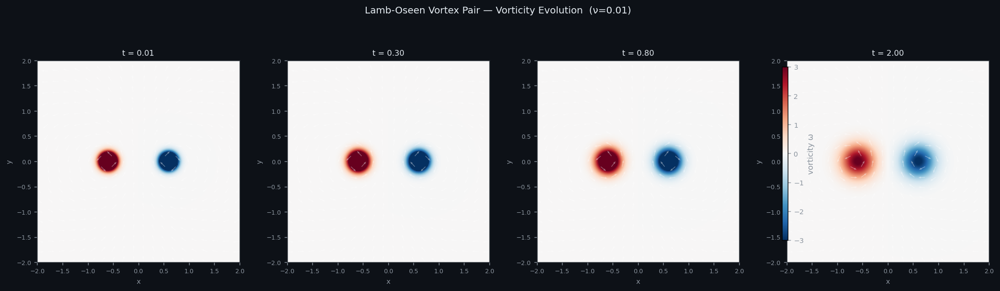
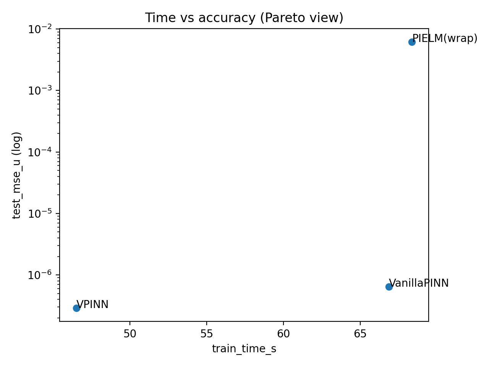
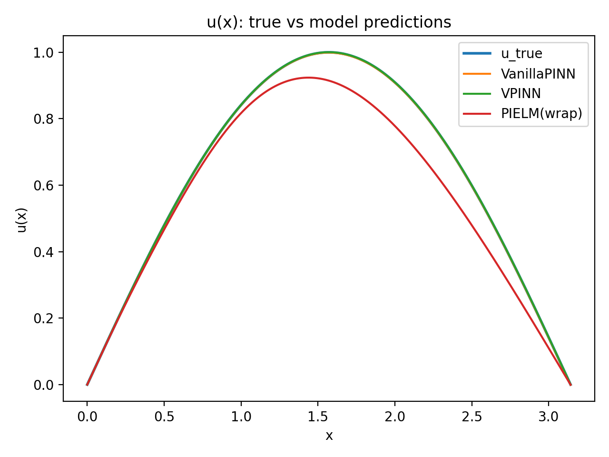
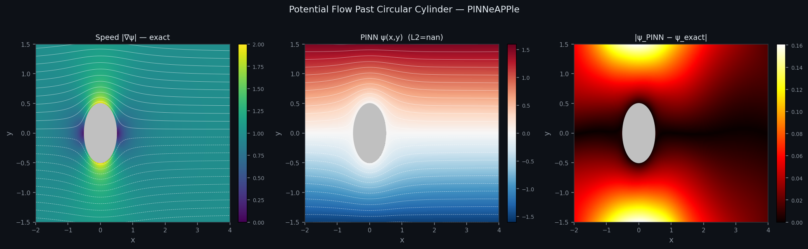
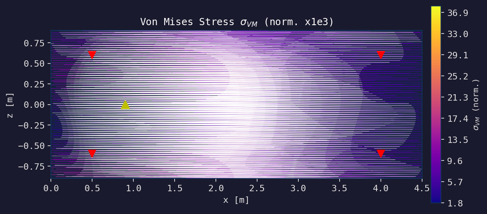
Applications
Working SaaS prototypes, each with a README, numbers and stated limits. The selection below is a sample; the full set is 63. Use them as a starting point for your own product — or as proof the base holds up on the real case.
Plate-fin heat sinks in seconds, with thermal margin and pressure drop, checked against published correlations.
Junction temperature of every component on the board in about a second, calibrated with Ensemble Kalman Inversion.
Upload a CSV and get the physics-level diagnosis: frozen sensor, error code, swapped unit, energy balance.
Up to eight files, one schema, in UTC and with consistent units — plus an agreement check between sources.
A structured record of every run: solver, mesh, time stepping, boundary conditions and a convergence verdict.
Datasheets become the filled form, with the source of every value. Fills ASME U-DR-1 and four more formats.
The convection coefficient h from a few thermocouples, with a PINN, in 1D, 2D and 3D, each answer checked against an independent solution.
An exportable checklist with PASS, WARNING or FAIL, file and line, why it matters and how to fix it — before the run.
Accepts OpenFOAM, Gmsh, VTK, Abaqus/CalculiX and STL. Returns metrics, histograms, a 3D heatmap and the worst elements.
Reference against candidate, field by field and point by point, even across different meshes, with an error map.
CAD, mesh, simulation, dataset, model, prediction: the full digital thread, with hash and origin, exported as W3C PROV-JSON.
An OpenFOAM, CalculiX, VTK or Gmsh result becomes one neutral physical dataset, with units on every field.
NSGA-II over the wing of an A320-class airliner, a full mission per design, checked in 3D OpenFOAM and exported to glTF, USD and STL.
Turns the simulation results you already have into a fast predictive model, measured on runs it never saw, served with its validity range enforced at the endpoint.
Puts a validated model to work next to operational data, with EnKF, alerts, validity checks and revalidation — and says when to stop trusting it.
Turns experiments and simulations into reproducible technical evidence: a test counts as passed only if it ran.
Packages the thermal, data and quality applications into a single supervised service with login.
Get started
One-command install, no build. The same package runs the problem, the training, the comparison against the solver and the report export.
# the h nobody measures, from a handful of thermocouples from pinneapple_physics import HeatConduction1D from pinneapple_neural import PINNTrainer problem = HeatConduction1D( conductivity=50.0, # W/(m·K) length=0.30, # m learn_h=True, # h enters as a trainable parameter ) model = PINNTrainer(problem, layers=[3, 64, 64, 1]) report = model.fit(thermocouples=readings, epochs=5000) print(report.h, report.h_std) # 14.8 0.3 (true value: 15) report.verify_against("finite-volume") # per-field error, error map
# checks physical consistency and convergence, not just "did it solve" from pinneapple_analysis.verification import physics_confidence_score as pcs confidence = pcs.compute_physics_confidence( guardrail_report=guardrail_report, convergence_result=convergence_result, ) # one score from 0 to 1 per check — never an average that # hides a check that did not run for check in confidence.checks: print(check.name, check.score, check.source)
# the end-to-end CFD pipeline, E1 to E11 $ pinneapple-cfd run --problem erosion-bend \ --geometry bend_90.stl \ --solver openfoam \ --verify veriphysics # the public, reproducible benchmark $ python -m pinneapple.benchmarks.ssqn_helmholtz # and the 248 examples, each with checked output $ python run_all_examples.py
Open source
Apache-2.0, on PyPI, with versioned releases. What is open is genuinely open — and what is a product is called a product.
The core: PINN, FNO, DeepONet, GNN, solvers, geometry, UQ, digital twins and REST serving. Everything else here is built on this repository.
A lightweight, standalone framework for building PINNs from PDEs written in SymPy, with PyTorch automatic differentiation. For anyone who wants PINNs without the whole platform.
Public, reproducible Physics AI benchmarks on the platform: SSQN Helmholtz, LBM vortex shedding, LPM design space, latency and shard balance.
A general-purpose agentic framework (ELM AI Agentic Framework), at an earlier stage. It is not yet wired into the rest of the PINNeAPPle story — said plainly.
Who builds it
Physics, industrial engineering and software on the same team. The rule is simple: if it has no measured number, it does not go on screen.

A physicist by training, he combines physics, AI and engineering to take scientific models into real applications. He created PINNeAPPle and works on AI applied to real engineering and industrial problems in Brazil. His background includes climate, agribusiness and solar astrophysics.
LinkedIn →More than 18 years of leadership in the steel industry across R&D, industrial innovation, decarbonization and large-scale operations in Latin America. MSc in Metallurgical Engineering, Executive MBA, and certifications from MIT and the University of Miami.
LinkedIn →Bring your case
Send it over. We come back with a closed scope and a measurable success criterion — or we tell you the classical method does it better.